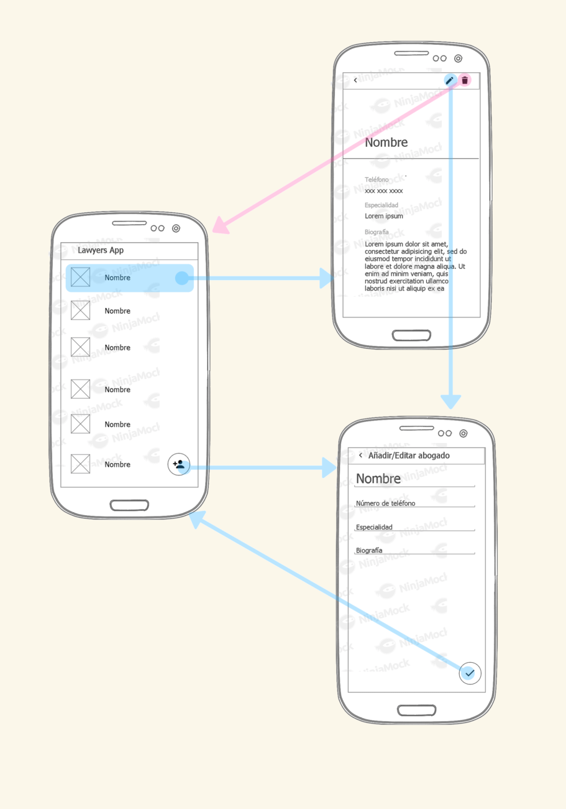

Lawyers App es un pequeño ejemplo que demuestra cómo crear una aplicación Android con bases de datos relacionales.
Su función es servir como plataforma de persistencia para todos los abogados de una compañía que presta servicios de asesoría a los usuarios.
Se compone de 3 screens:
> Lawyers: Contiene una lista con todos los abogados del gabinete.
> Lawyer Detail: Muestra el detalle de un abogado al presionar un ítem de lista.
> Add/Edit Lawyer: Formulario con campos de texto para crear o modificar un abogado.
> El siguiente es un wireframe que muestra los puntos de interacción:

Normalmente cuando conectamos otro gestor de bases de datos tenemos que validar los datos del equipo, el usuario y el esquema, pero con SQLite no se requiere nada de eso, ya que podemos trabajar directamente sobre la base de datos.
La clase que nos permitirá comunicar nuestra aplicación con la base de datos se llama SQLiteOpenHelper. Se trata de una clase abstracta que nos provee los mecanismos básicos para la relación entre la aplicación Android y la información.
Para implementar este controlador debes:
> Crear una clase que extienda de SQLiteOpenHelper
> Configurar un constructor apropiado
> Sobrescribir los métodos onCreate() y onUpgrade()
> Creando helper de abogados
1. Crea nueva clase que extienda de SQLiteOpenHelper y llamala LawyersDbHelper.
public class LawyersDbHelper extends SQLiteOpenHelper {
2. Escribe tú constructor y usa super para mantener la herencia del helper.
public static final int DATABASE_VERSION = 1;
public static final String DATABASE_NAME = "Lawyers.db";
public LawyersDbHelper(Context context) {
super(context, DATABASE_NAME, null, DATABASE_VERSION);
}
Los parámetros del constructor tienen la siguiente finalidad:
Contexto de acción para el helper.
String name: Nombre del archivo con extensión .db, donde se almacenará la base de datos, que a su vez corresponde al nombre de la base de datos.
CursorFactory factory: Asignamos null, por ahora no es necesario comprender el funcionamiento de este parámetro.
int version: Entero que representa la versión de la base de datos. Su valor inicial por defecto es 1. Si en algún momento la versión es mayor se llama al método onUpgrade() para actualizar la base de datos a la nueva versión. Si es menor, se llama a downUpgrade() para volver a una versión previa.
3. Sobrescribe el método onCreate().
Este método es llamado automáticamente cuando creamos una instancia de la clase SQLiteOpenHelper. En su interior establecemos la creación de las tablas y registros.
Recibe como parámetro una referencia de la clase SQLiteDataBase, la cual actua como manejadora de la base de datos.
@Override
public void onCreate(SQLiteDatabase sqLiteDatabase) {
// Comandos SQL
}
Por defecto el archivo de la base de datos será almacenado en:
/data/data//databases/.db
. Sobrescribe el método onUpgrade().
Este es ejecutado si se identificó que el usuario tiene una versión antigua de la base de datos.
En su interior establecerás instrucciones para modificar el esquema de la base de datos, como por ejemplo eliminar todo el esquema y recrearlo, agregar una nueva tabla, añadir una nueva columna, etc.
@Override
public void onUpgrade(SQLiteDatabase db, int oldVersion, int newVersion) {
// No hay operaciones
}
Recibe tres parámetros:
SQLiteDatabase db: Manejador de la base de datos.
int oldVersion: Se trata de un entero que indica la versión antigua de la base de datos.
int newVersion: Entero que se refiere a la versión nueva de la base de datos.
Codigo para crear una base de datos
@Override
public void onCreate(SQLiteDatabase sqLiteDatabase) {
sqLiteDatabase.execSQL("CREATE TABLE " + LawyerEntry.TABLE_NAME + " ("
+ LawyerEntry._ID + " INTEGER PRIMARY KEY AUTOINCREMENT,"
+ LawyerEntry.ID + " TEXT NOT NULL,"
+ LawyerEntry.NAME + " TEXT NOT NULL,"
+ LawyerEntry.SPECIALTY + " TEXT NOT NULL,"
+ LawyerEntry.PHONE_NUMBER + " TEXT NOT NULL,"
+ LawyerEntry.BIO + " TEXT NOT NULL,"
+ LawyerEntry.AVATAR_URI + " TEXT,"
+ "UNIQUE (" + LawyerEntry.ID + "))");
}
Este método ejecuta una sola sentencia SQL que no retorne en filas. Por lo que el comando SELECT no es posible usarlo dentro de él.
Es recomendable que la llave primaria sea BaseColumns._ID, ya que el framework de Android usa esta referencia internamente en varios procesos.
Sin embargo puedes usar tu propio ID y añadirle un índice UNIQUE para mantener la unicidad de tus filas según tus reglas de negocio.
Evita ejecutar múltiples sentencias en una sola invocación del método execSQL(). Puede que se ejecute la primera, pero las otras no surtirán efecto.